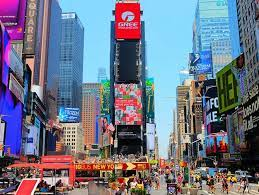
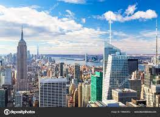
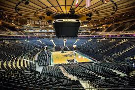
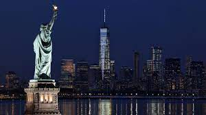

BIENVENUE A NEW YORK
NEW YORK
Considérée comme la ville la plus importante du monde sur les plans économique et culturel, New York est située dans l'État homonyme des États-Unis, bien qu'elle ne soit pas sa capitale bien qu'elle ait la plus grande population non seulement dans cet État, mais dans tout le pays. New York, également connue sous le nom de Big Apple ou The Big Apple en anglais, est l'un des centres économiques, démographiques et culturels du monde, avec une population de plus de huit millions d'habitants et une superficie de 1 214 kilomètres carrés. En outre, New York est le siège des Nations Unies, ce qui lui confère également une plus grande pertinence que le reste des grandes villes du monde.

Times Square
Times Square est le cœur et l'endroit le plus touristique à visiter à New York. Tous ceux qui visitent cette ville traversent ce carrefour plusieurs fois, de jour comme de nuit, pour être fascinés par ses enseignes publicitaires et ses néons.

Au sommet du rocher
Le Top of the Rock, situé dans le complexe de bâtiments du Rockefeller Center, est notre point de vue préféré à visiter à New York. Situé entre les 67ème et 70ème étages du gratte-ciel de Comcast, ce point de vue offre une vue panoramique impressionnante sur Manhattan avec l'Empire State Building d'un côté et Central Park de l'autre.

Le Madison Square Garden
Le Madison Square Garden, un stade légendaire où les New York Knicks et les New York Rangers de la NBA jouent au hockey sur glace, est un autre incontournable de New York. Pour visiter ce stade de cinq étages d'une capacité de plus de 20000 personnes, vous pouvez acheter un billet pour assister à un match ou réserver cette visite guidée en espagnol qui vous mènera à travers les endroits les plus intéressants de cette salle de sport emblématique.
Wall Street
Dans le quartier financier se trouve Wall Street, l'une des rues les plus touristiques et les plus connues de New York. Cette zone comprend le bâtiment de la Bourse, la Réserve fédérale et un peu plus loin le célèbre taureau de Wall Street ou Charging Bull, qu'ils disent que vous devriez toucher pour vous porter chance.

La Statue de la Liberté
La Statue de la Liberté est l'un des monuments les plus connus au monde et le plus célèbre à visiter à New York.